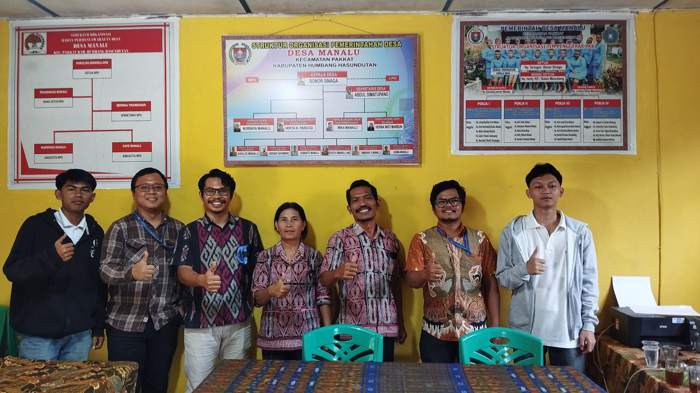
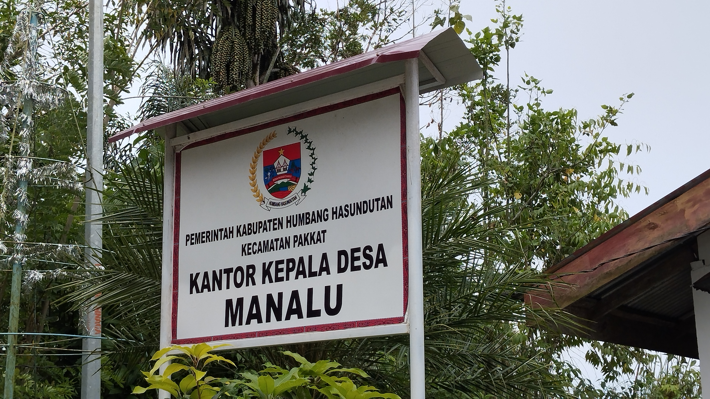
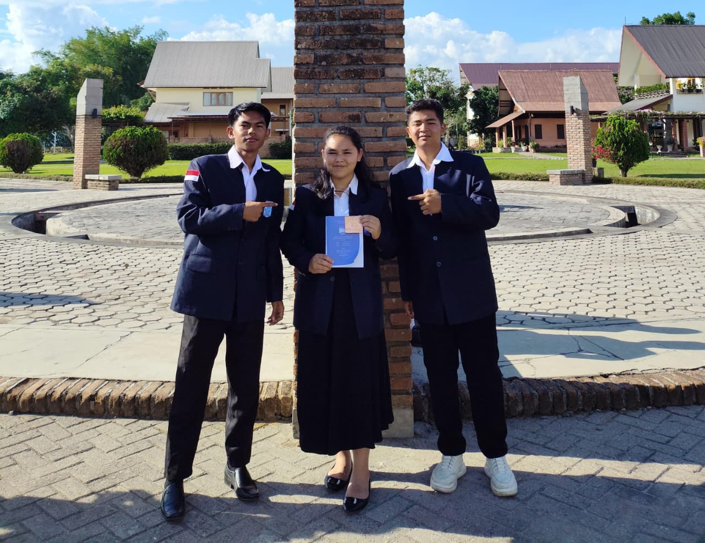
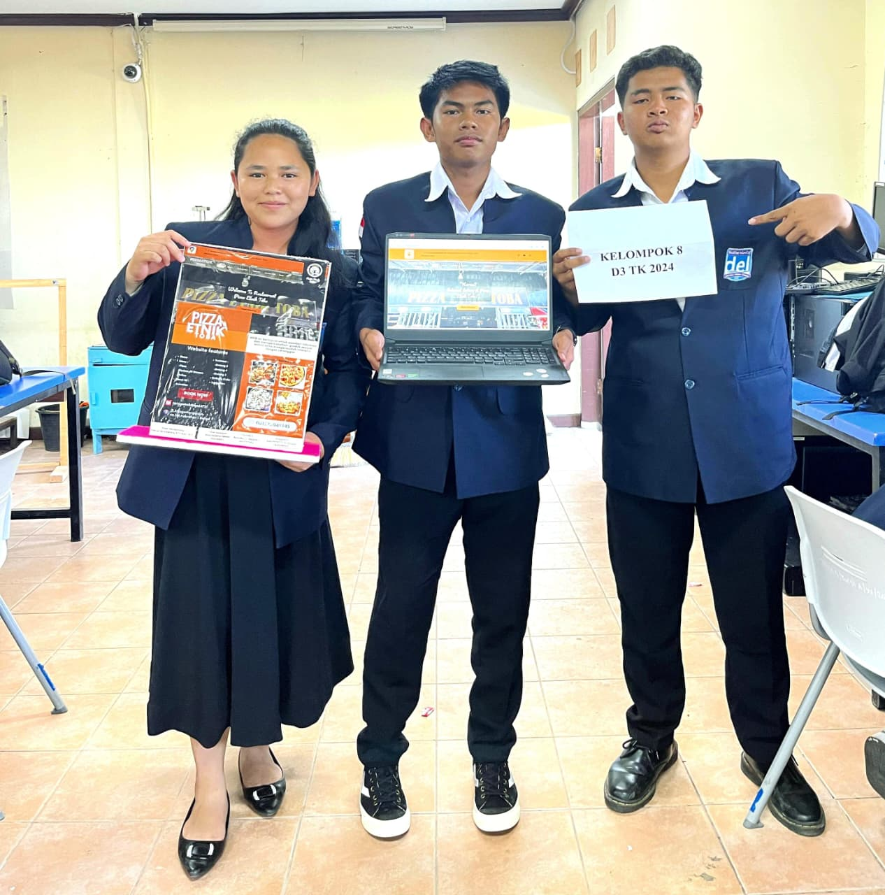
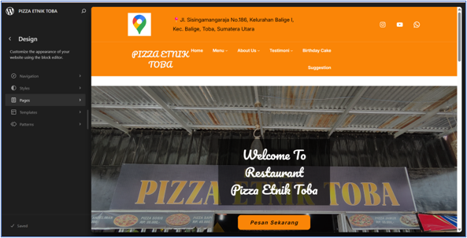
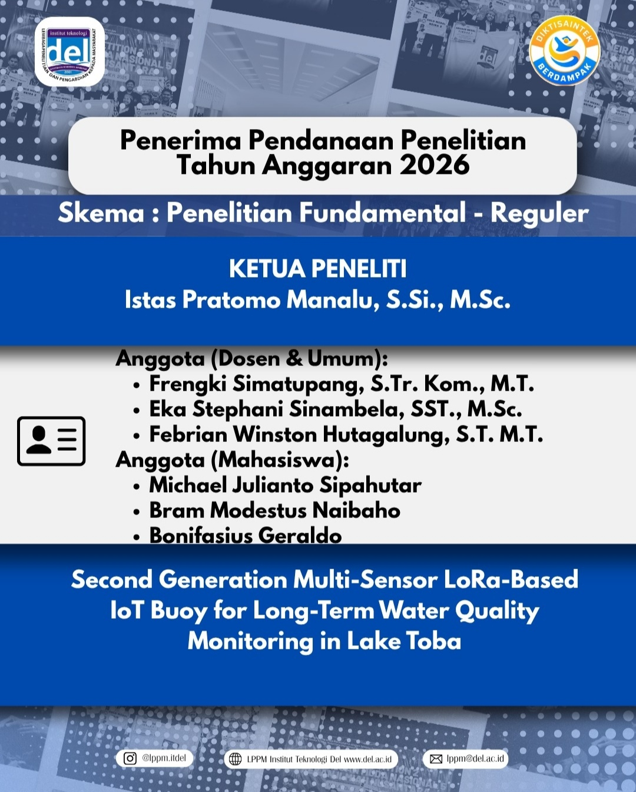

End-to-End Product Work


Pengabdian Kepada Masyarakat (PKM) Sistem Informasi Desa Manalu
Sistem ini di bangun bertujuan menampilkan informasi Desa manalu Kecamatan Pakat Kabupaten Humbang Hasundutan, Sumatera Utara. Fitur fitur yang terdapat pada sistem informasi ini yaitu info desa, Potensi Desa, Penguman Desa, Berita dan layanan Desa. Sistem ini di harapkan dapat membantu masyarakat untuk mengetahui informasi-informasi di Desa Manalu. Sistem ini merupakan Pengabdian Kepada Masyarakat.



Proyek Akhir 1
Tujuan dari pengembangan website Informasi Restaurant Pizza Etnik Toba adalah untuk memberikan kemudahan kepada pelanggan dalam memperoleh informasi mengenai berbagai menu yang tersedia di Restaurant Pizza Etnik Toba. Selain itu, website ini juga bertujuan untuk memperluas jangkauan pasar dengan menyediakan sistem pemesanan digital yang dapat diakses secara online oleh pelanggan kapan saja dan di mana saja.


Proyek Akhir 2
Tujuan dari pengembangan Sistem Monitoring Kualitas Air Danau Berbasis LoRa Buoy ini adalah untuk mempermudah pemantauan kondisi kualitas air danau secara otomatis dan real-time melalui pengukuran parameter seperti pH, suhu, dan kekeruhan. Selain itu, sistem ini bertujuan untuk mendukung pengiriman data jarak jauh menggunakan teknologi LoRa sehingga tetap dapat beroperasi di wilayah dengan keterbatasan jaringan seluler.

Second Generation Multi-Sensor LoRa-Based IoT Buoy for Long-Term Water Quality Monitoring in Lake Toba
Saya senang dapat menjadi bagian dari penelitian “Second Generation Multi-Sensor LoRa-Based IoT Buoy for Long-Term Water Quality Monitoring in Lake Toba”. Melalui penelitian ini, saya berkesempatan untuk memperdalam pengalaman dalam bidang IoT, sensor, dan teknologi LoRa serta berkontribusi dalam pengembangan sistem pemantauan kualitas air secara berkelanjutan di Danau Toba. Semoga pengalaman ini dapat menjadi langkah berharga dalam mengembangkan kemampuan dan wawasan saya di bidang teknolog.